这些是我已经实体化的著作合集。它们可能并不精美，也可能并不巧妙，但这都是我个人最真实的展现。 如果你希望获得一本，你可以给我的邮箱 merallunaur@gmail.com 发邮件，并阐释必要性。 它们是完全免费的——你甚至不需要付邮费。
These are collections of works I have materialized. They may not be refined, nor particularly skillful, but they are the most direct manifestations of myself. If you would like a copy, you may email me at merallunaur@gmail.com and explain your reasons. They are entirely free—you won’t even need to cover shipping.
《琺瑯壺》是一個容器。
它盛放的不是作品，而是一些已經失效的時間。
2019到2023之間的句子在裡面沉澱——
它們並不穩定，有的輕，有的過重，有的甚至還沒有形成意義，就已經被寫下。
你可以看見一種緩慢的變形：
語言開始試圖靠近某個中心，但那個中心始終不存在。
而更深的一層，是某種無法回收的損失。
高中的我寫下這些句子時，並不知道它們是什麼；
現在的我，卻已經無法再以那種方式寫作。
那不是技巧的缺失，
而是一種已經消散的感受能力。
這本集子並不成立，
它只是留下了一些無法再次發生的瞬間。
Enamel Teapot is a container.
It does not hold works, but fragments of time that no longer function.
Between 2019 and 2023, sentences settled inside it—
unstable, uneven, some too light, some too heavy, some written before they could even become meaning.
There is a slow deformation:
language attempts to move toward a center that never truly exists.
Beneath that lies a loss that cannot be retrieved.
When I wrote these lines in high school, I did not know what they were;
now, I can no longer write in that way.
It is not a loss of technique,
but a disappearance of a certain capacity to feel.
This collection does not quite hold together.
It simply preserves moments that can no longer occur again.
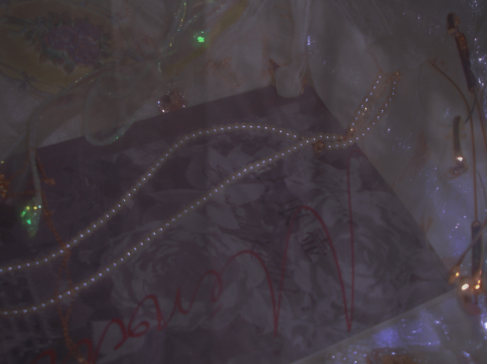
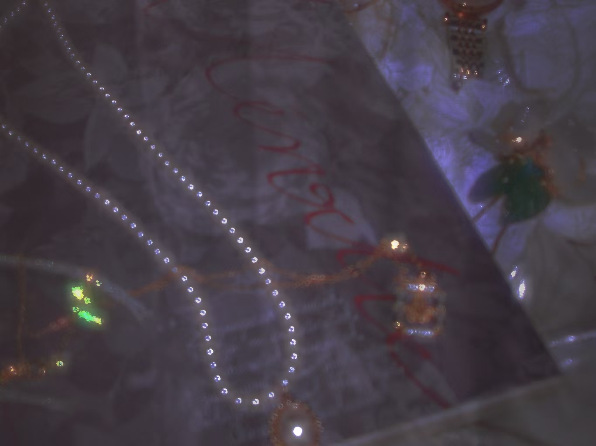
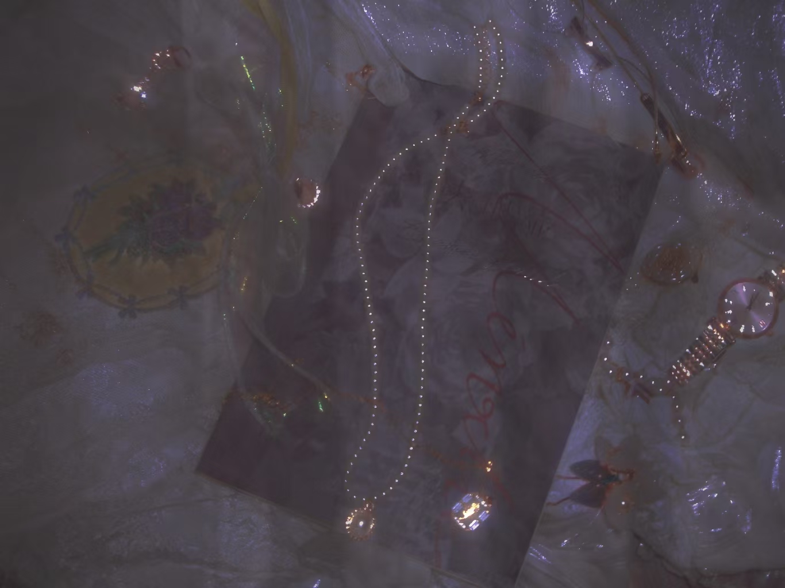
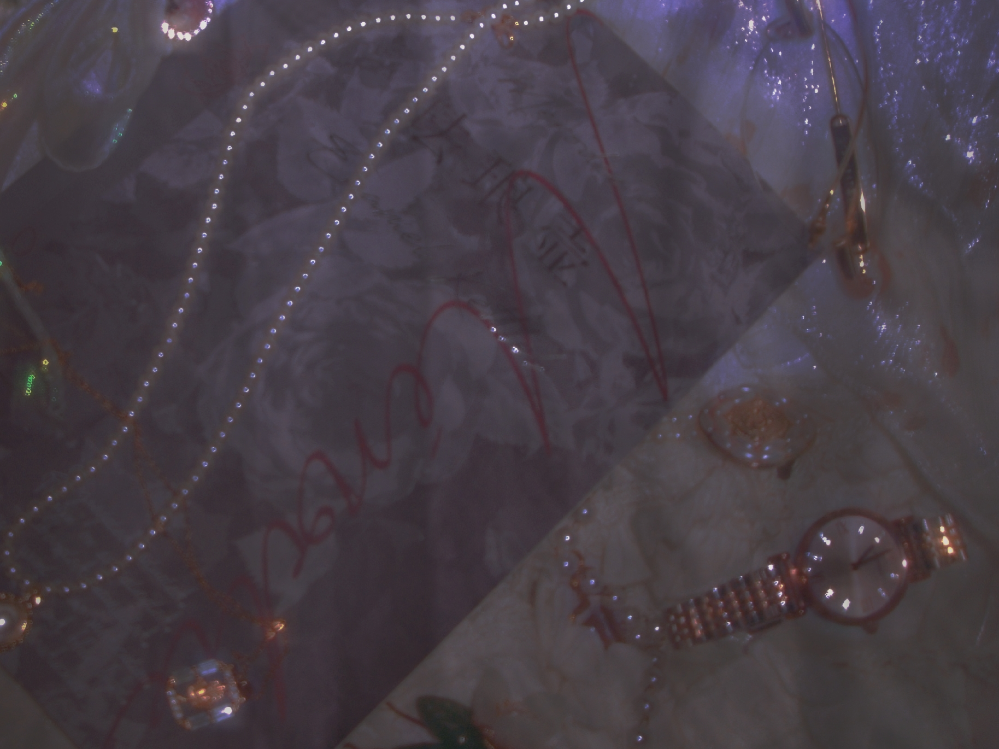
《小俏羊羔》並不是一個故事。
它更像是一種緩慢蔓延的結構。
邪教只是表面，
在更深的地方，是某種對「神」的持續腐蝕。
母性在其中並不溫柔，
戰爭也並不爆發——
它們更像是彼此滲透的兩種形態。
人物並不完整。
他們不是被塑造出來的，而是在某種壓迫之下逐漸出現，
又在出現的同時開始崩解。
「神」並不存在，
但所有人都在圍繞一個空洞行動。
這部作品始終沒有完成。
它在生成的過程中不斷偏離自己，
最終只留下了一種不穩定的回聲。
The Little Lamb is not a story.
It is closer to a structure that slowly spreads.
The cult is only a surface.
Beneath it, there is a continuous corrosion of “God.”
Motherhood is not gentle here,
and war does not erupt—
they seep into each other as two indistinguishable forms.
The characters are incomplete.
They are not shaped, but forced into emergence under pressure,
only to begin dissolving at the moment they appear.
“God” does not exist,
yet everything moves around a void.
The work never reaches completion.
It keeps drifting away from itself as it forms,
leaving behind only an unstable echo.
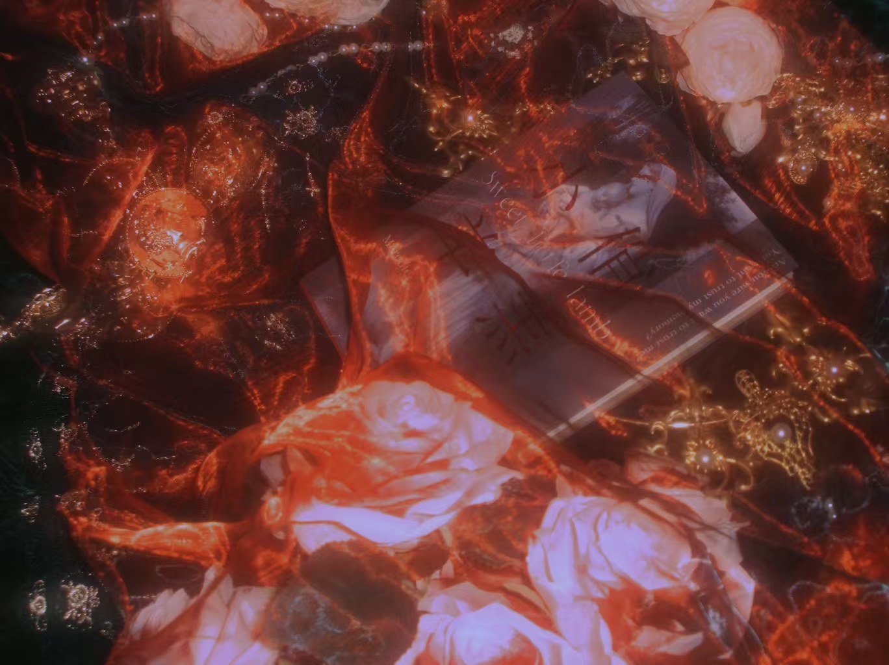
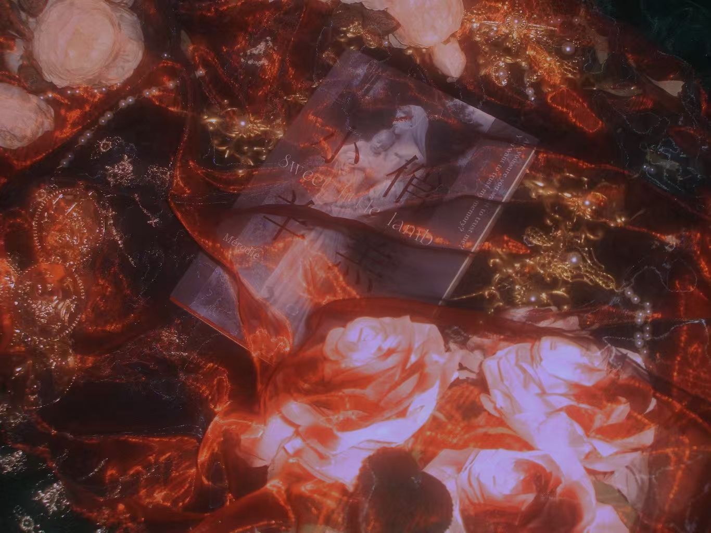
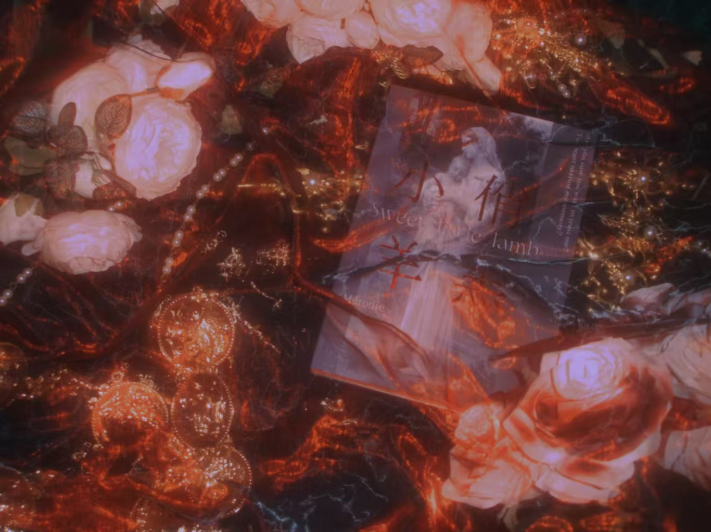
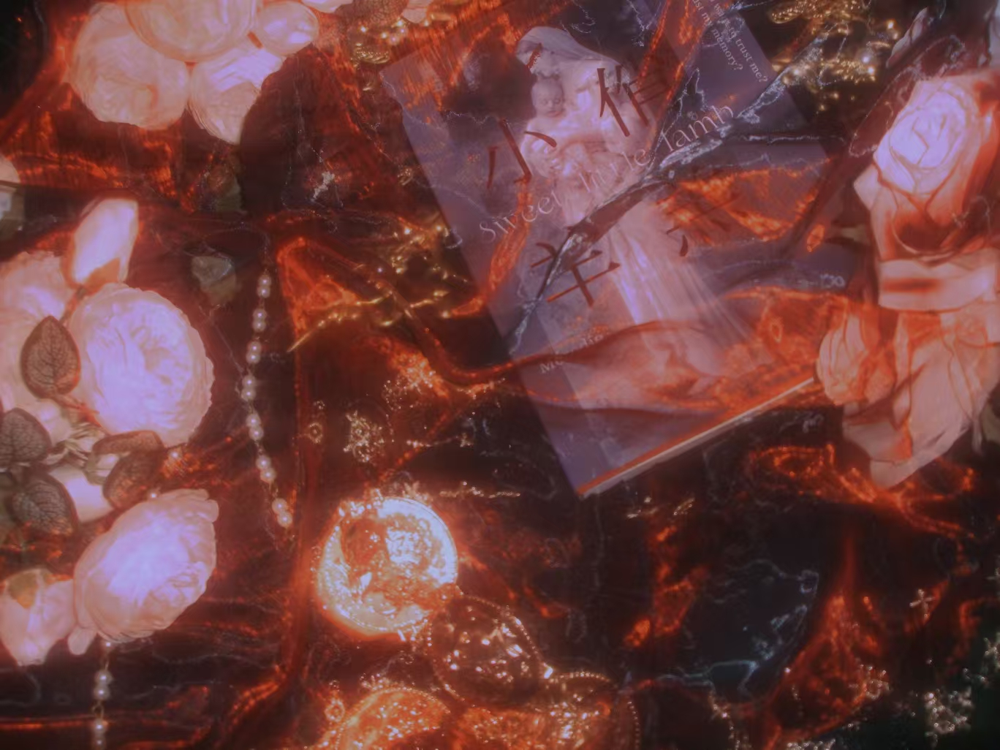
《一種輕浮的剝削結構》是一次收緊。
語言開始變得鋒利，邊界被精確地切割出來。
在這裡，寫作不再溢出。
它被組織，被排列，被控制——
每一個句子都知道自己在什麼位置上。
情緒仍然存在，
但它們被壓縮成結構的一部分，
不再直接顯現。
這些文本是完成的。
它們封閉、穩定、有效。
但正因為如此，
它們也失去了一種危險。
寫作從一次暴露，
轉變為一次構造。
在這些作品中，我確實成為了某種「自我」。
但這個「自我」並不透明，
它更像是一種被精心製造出來的表面。
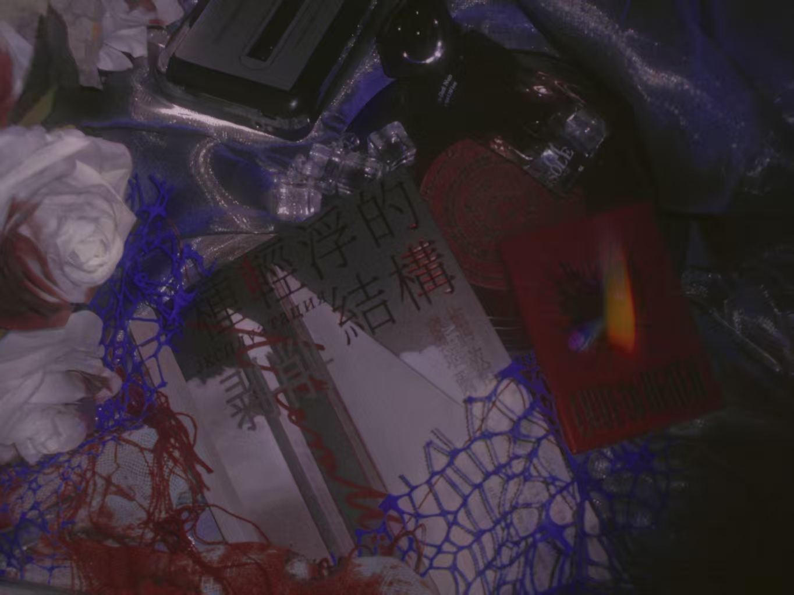
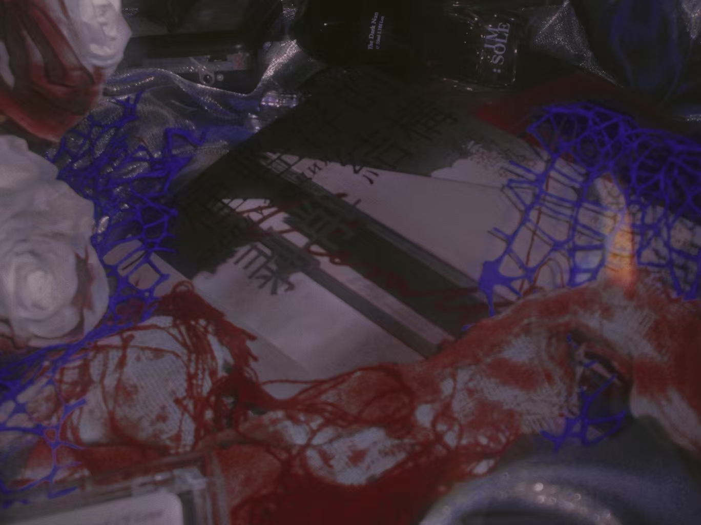
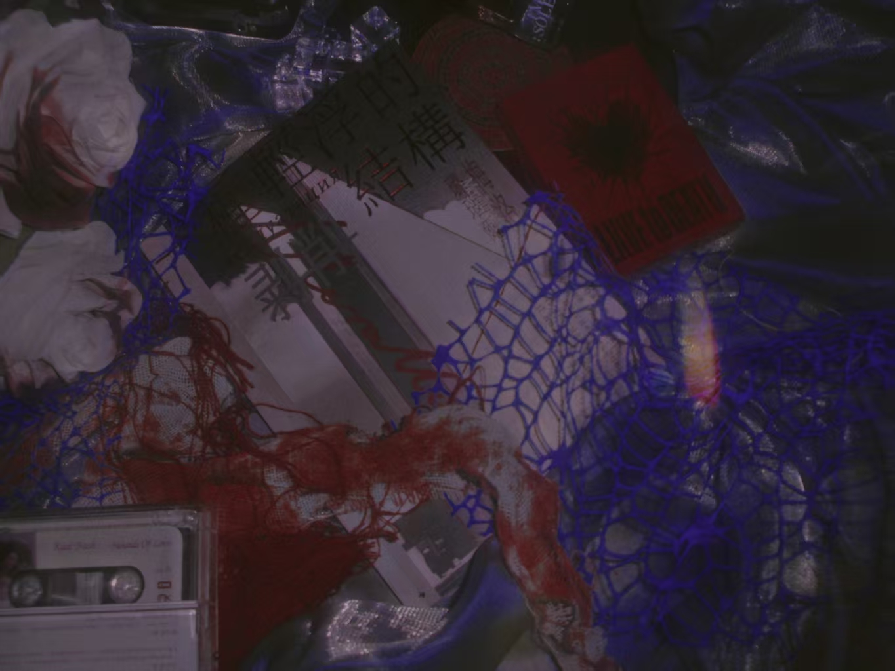
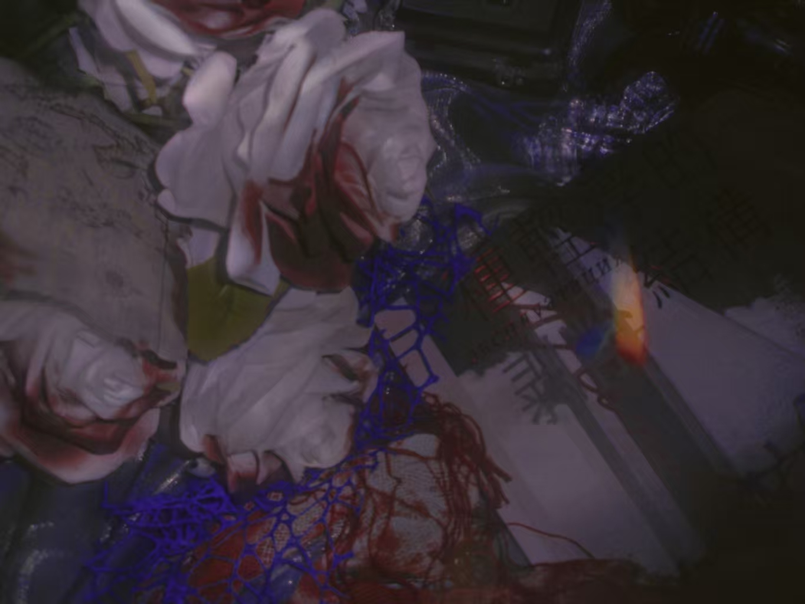
A Frivolous Structure of Exploitation is a tightening.
Language becomes sharp, its boundaries precisely cut.
Writing no longer spills over.
It is arranged, structured, controlled—
each sentence knows exactly where it stands.
Emotion still exists,
but it is compressed into the structure,
no longer appearing directly.
These texts are complete.
Closed, stable, effective.
And precisely for that reason,
they lose a certain kind of danger.
Writing shifts from exposure
to construction.
Within these works, I do become a kind of “self.”
But that self is not transparent—
it is closer to a carefully manufactured surface.